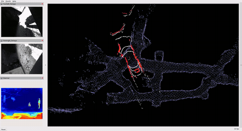
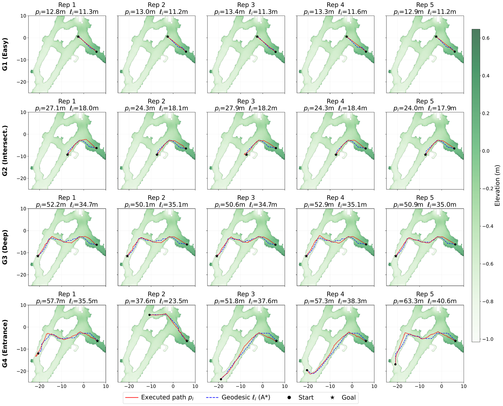
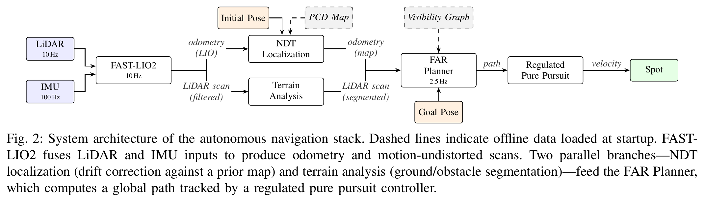
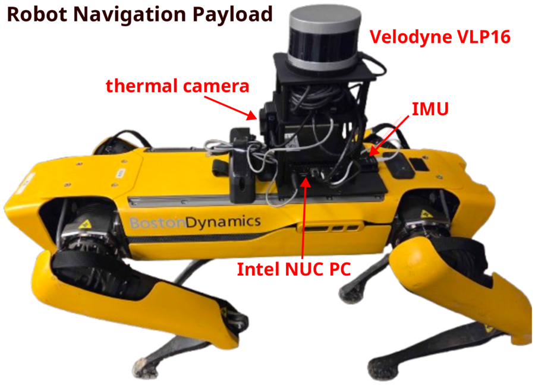

Department of Mining and Explosive Engineering
Missouri University of Science and Technology
Pre-print, under review
Embodied navigation in underground mines faces significant challenges, including narrow passages, uneven terrain, near-total darkness, GPS-denied conditions, and limited communication infrastructure. While recent learning-based approaches rely on GPU-accelerated inference and extensive training data, we present a fully autonomous navigation stack for a Boston Dynamics Spot quadruped robot that runs entirely on a low-power Intel NUC edge computer with no GPU and no network connectivity requirements. The system integrates LiDAR-inertial odometry, scan-matching localization against a prior map, terrain segmentation, and visibility-graph global planning with a velocity-regulated local path follower, achieving real-time perception-to-action at consistent control rates. After a single mapping pass of the environment, the system handles arbitrary goal locations within the known map without any environment-specific training or learned components. We validate the system through repeated field trials using four target locations of varying traversal difficulty in an experimental underground mine, accumulating over 700 m of fully autonomous traverse with a 100% success rate across all 20 trials (5 repetitions × 4 targets) and an overall Success weighted by Path Length (SPL) of 0.73 ± 0.09.
| Goal | Trials | Success | Path (m) | SPL | Time (s) |
|---|---|---|---|---|---|
| G1 (Easy) | 5/5 | 100% | 13.1 ± 0.2 | 0.87 ± 0.01 | 27 ± 1 |
| G2 (Intersection) | 5/5 | 100% | 25.5 ± 1.7 | 0.71 ± 0.05 | 60 ± 6 |
| G3 (Deep) | 5/5 | 100% | 51.3 ± 1.0 | 0.68 ± 0.01 | 127 ± 7 |
| G4 (Entrance) | 5/5 | 100% | 53.5 ± 8.8 | 0.66 ± 0.04 | 131 ± 20 |
| All | 20/20 | 100% | 35.9 | 0.73 ± 0.09 | 86 |
Executed paths (red) vs. geodesic shortest paths (blue dashed) for all 20 trials across 4 goal locations, overlaid on the mine elevation map.



| Component | Model | Notes |
|---|---|---|
| Robot | Boston Dynamics Spot | |
| Compute | Intel NUC13 (i7-1360P) | 12C/16T, 32 GB RAM, no discrete GPU, 40W sustained |
| LiDAR | Velodyne VLP-16 | 10 Hz, 360° FoV, 0.75–30 m range |
| IMU | Yahboom | 100 Hz, 6-axis |
| Thermal | TOPDON TC001 | 30 Hz (recorded only, not used for navigation) |
Each demo shows one representative trial at 5× speed. The robot navigates autonomously from start to goal using only LiDAR and IMU — no cameras, no GPS, no network.

Third-person phone footage from the underground mine. The full mission video shows a complete Goal 4 trial at 5× speed; the arrival clips below show the robot reaching each goal location.
This research was funded by a grant from the Centers for Disease Control's National Occupational Safety and Health (grant no. U60OH012350-01-00).